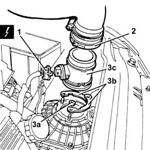
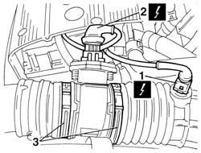
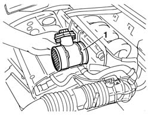
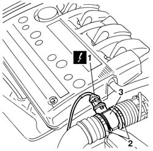

1056B09 hot film air flow meter (debimeter) r + r
- Path
- Procedures > 10 ENGINE > 1056 PETROL INJECTION SYSTEM > 1056B multi-point injection system (mpi) > 1056B09 hot film air flow meter (debimeter) r + r
- Kind
- repair procedure (removal / refitting; the operation number is the code)
- Applies to
- engines: 1.6 TS , 1.8 TS, 2.5 V6, 3.2 V6; all production periods
- Interactive page
- https://sloeber94.github.io/elrnDB-a156/en/#/3237533
Applies to: engines: 2.5 V6, 3.2 V6; all production periods
 Removing
Removing
 Refitting
RefittingDisconnect the battery negative (-) terminal.
 | Name | Connector |
|---|---|---|
- | Battery |
1. Disconnect the electrical connection from the hot-film air flow meter.
| Name | Connector |
|---|---|---|
1 | Air flow meter |
Move the relays fastened to the battery cradle to one side.
2. Disconnect the pipe carrying air to the throttle body from the flow meter.
3. Undo bolts (3a), remove half-rings (3b) and air flow meter (3c).

Applies to: engines: 2.5 V6, 3.2 V6; all production periods
Refitting
RemovingFit the air flow meter and fix it using the half-rings and the nuts.
Connect the hose carrying air to the throttle body to the air flow meter.
Replace the relays in their seats on the battery case.
Connect the electrical connection to the air flow meter.
Connect the negative (-) battery terminal.
Applies to: engines: 1.6 TS ; all production periods
Removing
RefittingDisconnect the battery negative terminal.
| Name | Connector |
|---|---|---|
- | Battery |
1. Disconnect the electrical connection from the intake air temperature sensor.
| Name | Connector |
|---|---|---|
1 | Air temperature sensor |
2. Disconnect the electrical connection from the flow meter.
| Name | Connector |
|---|---|---|
2 | Air flow meter |
3. Loosen both collars securing the sleeve to the flow meter.

Applies to: engines: 1.6 TS ; all production periods
1. Withdraw and remove the flow meter from the sleeve.

Applies to: engines: 1.6 TS ; all production periods
Refitting
RemovingPosition the flow meter in the seats on the sleeve and tighten both retaining collars.
Connect the flow meter electrical connection.
Connect the electrical connection to the intake air temperature sensor.
Connect the battery negative terminal.
Applies to: engines: 1.6 TS ; all production periods
Removing
RefittingDisconnect the battery negative terminal.
| Name | Connector |
|---|---|---|
- | Battery |
1. Disconnect the electrical connection from the flow meter.
| Name | Connector |
|---|---|---|
1 | Air flow meter |
2. Loosen both clips securing the sleeve to the flow meter.
3. Withdraw and remove the flow meter from the sleeve.

Applies to: engines: 1.6 TS ; all production periods
Refitting
RemovingFit the flow meter in its seats on the sleeve and tighten both retaining collars.
Connect the flow meter electrical connection.
Connect the battery negative terminal.
Topics linked from this page (4)
- A1 Battery
- A1B Battery ( BATTERY NEGATIVE )
- K41 Air flow meter ( ENGINE )
- K42 Air temperature sensor